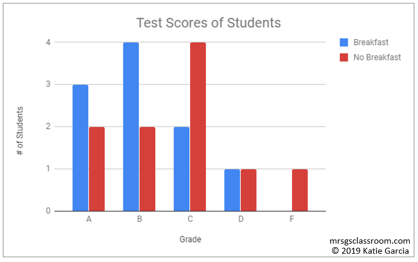

Here is the data collected from the study where you compared the test scores of students who ate breakfast versus those who did not eat breakfast in an algebra math class. Is this quantitative or qualitative data you collected?
qualitative data
.
quantitative data
.

Now the data collected from the breakfast study are compiled into a graph. Analyze the results by looking at the bar graph. Does the graph support your hypothesis (reminder -- *hypothesis: If students eat breakfast before a test, then they will SCORE HIGHER)
Yes, the results support the hypothesis. Those who ate breakfast scored higher than those who did not.
.
No, the results did not support the hypothesis. Those who ate breakfast scored lower than those who did not.
.
What is an example of an experimental error due to human error that could possibly occur in this study?
misread a student's score & then recorded it wrong